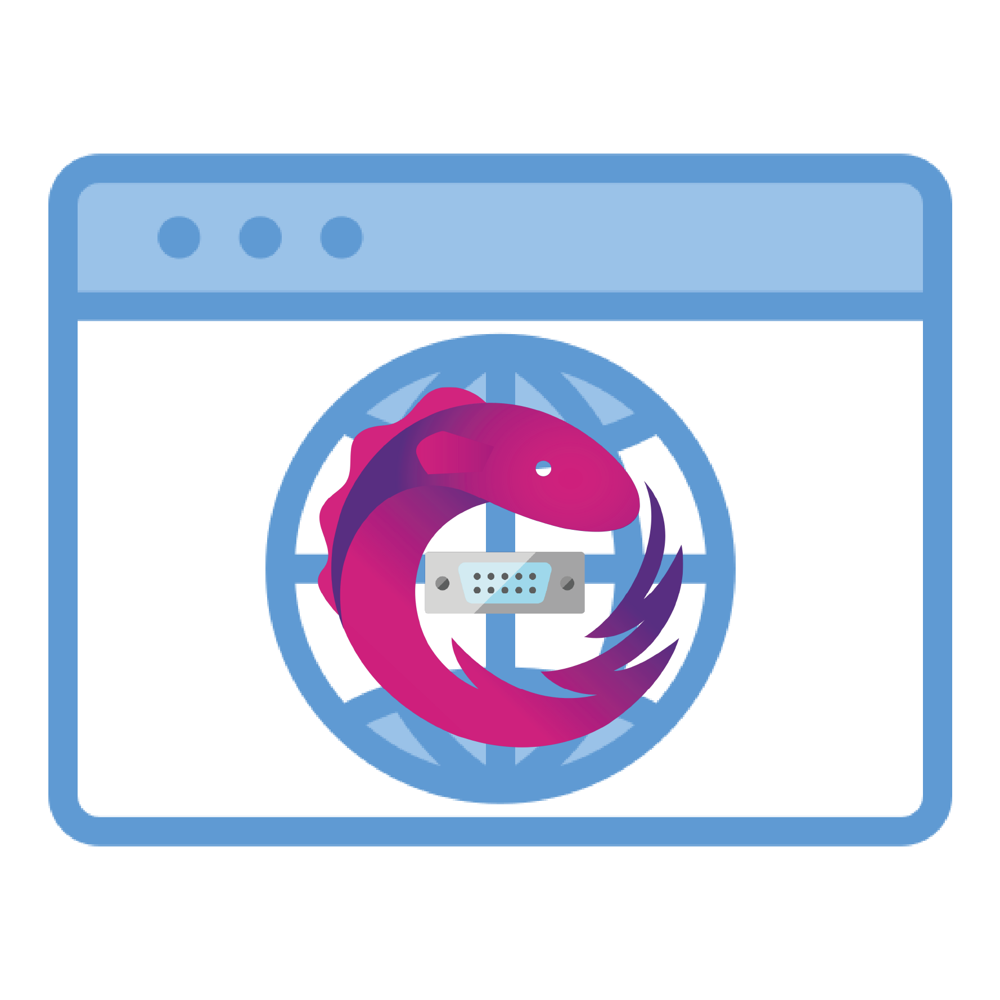

A TypeScript library that provides a reactive RxJS-based wrapper for the Web Serial API, enabling easy serial port communication in web applications.
The Web Serial API is currently only supported in Chromium-based browsers:
import { createSerialClient, isBrowserSupported } from '@gurezo/web-serial-rxjs';
// Check browser support
if (!isBrowserSupported()) {
console.error('Web Serial API is not supported in this browser');
return;
}
// Create a serial client
const client = createSerialClient({ baudRate: 9600 });
// Connect to a serial port
client.connect().subscribe({
next: () => console.log('Connected!'),
error: (error) => console.error('Connection error:', error),
});